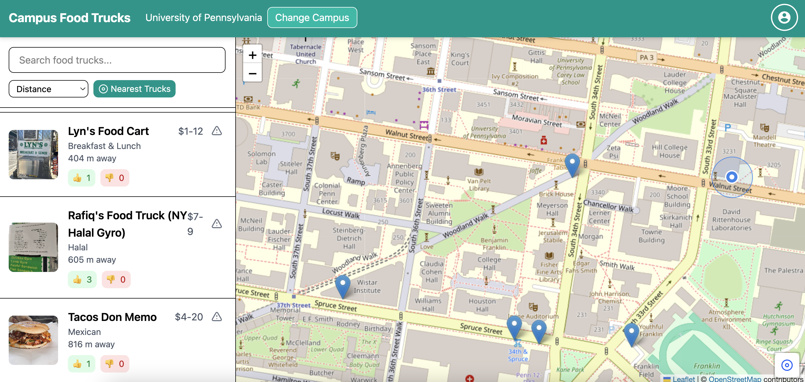
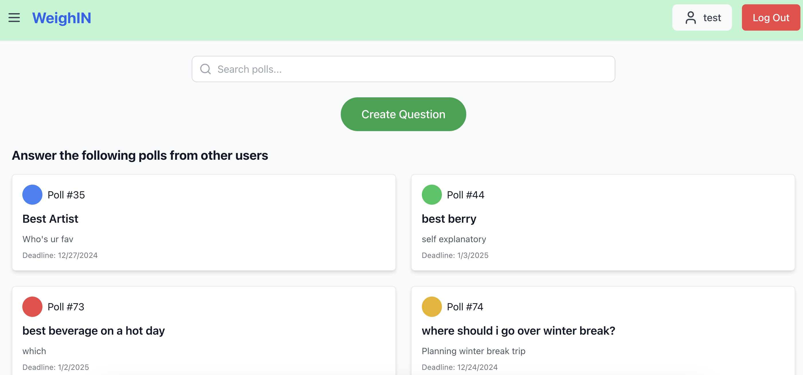
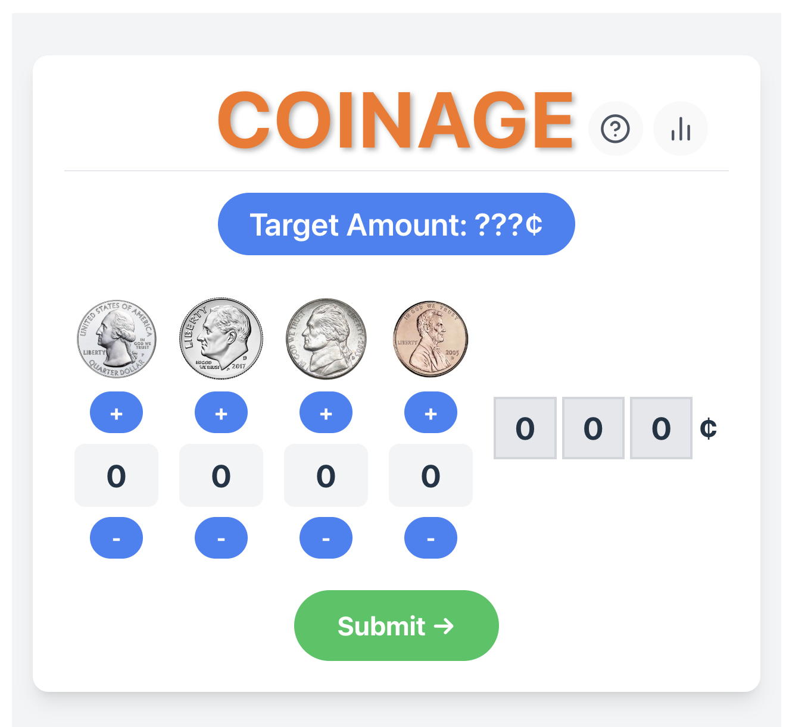
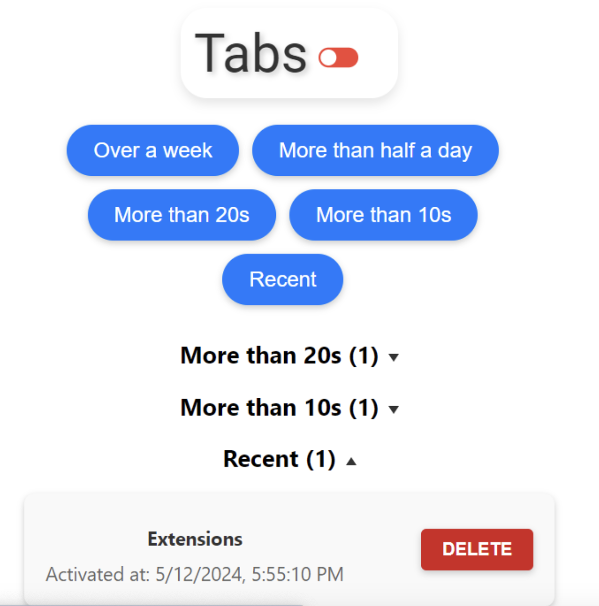
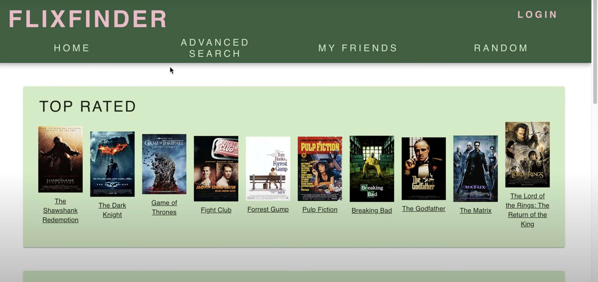
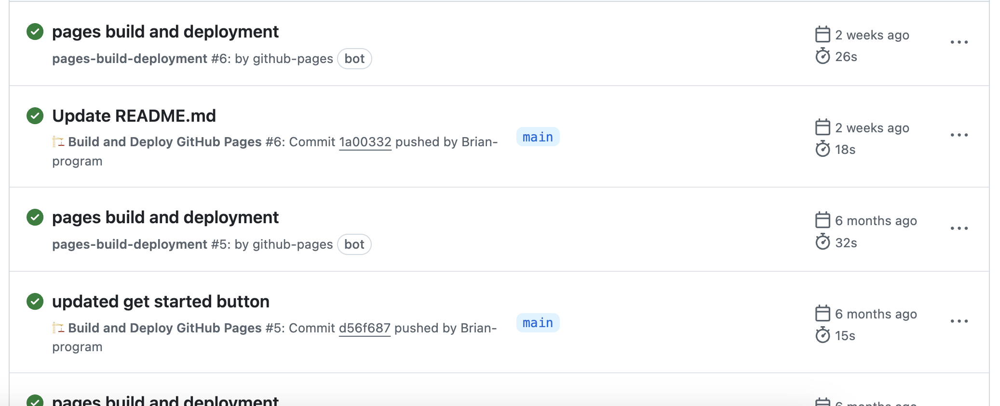

Hi!
i enjoy backend infrastructure, full-stack, apis, etc. and a faster learner
View ProjectsCOURSES TAKEN:
Programming Languages and Techniques I & II: (Object Oriented Programming, Data Structures, Algorithms, Time Complexity),
Introduction to Algorithms: (Graph Algorithms, P vs NP),
Database and Information Systems: (Apache Spark, mySQL, React JS, ACID Properties, AWS RDS),
Software Design/Engineer: (Github, HTML, CSS, JavaScript, Google Extensions, Agile, Scrum, CI/CD),
Big Data Analytics: (Sharding, SQLite),
Applied Machine Learning: (Python, NLP, Optimizing models, Deep Learning, Supervised vs Unsupervised),
Market and Social Systems on the Internet: (Networks Fundamentals, TCP, UDP),
Introduction to Computer Systems: (Assembly & C),
Computer Operating Systems: (Created Shells and OS, C),
Computer Organization & Design: (Docker, ISM Data pipelines)
Description: Easy Access to Campus Food Truck hours, menus, and so much more.
Skills Used: React TypeScript, APIs || Supabase

Description: Crowdsourcing platform designed to tackle indecisiveness in group decision-making by allowing users to post anonymous questions or dilemmas and receive anonymous multiple-choice feedback from the crowd.
Skills Used: React TypeScript || Python Flask, SQLite

Description: If you like Wordle and Math/Coins, you will definitely like this game.
Creation: 12/26/2024

Description: Chrome extension that organizes open tabs by time/days unused.
Skills Used: HTML, CSS, TypeScript, JavaScript, Chrome caching

Description: FlixFinder is a web app that allows users to discover new movies and streaming services. Users can create an account, login, and browse through a movie database to search for movies based on keywords or see what their friends are watching.
Skills Used: HTML, CSS, React.JS || Express.JS & Node.JS || mySQL, AWS RDS, Python Data Cleaning, Relational Databases

Description: Pages that autodeploy upon files updates/uploaded on github repo.
Skills Used: CI/CD, Github pages, Bootstrap, yaml

Description: Developed File Allocation Table and Kernel System to manage system resources and multithreading processes.
Skills Used: C, Assembly, OS, Shell, Docker
Cannot link due to Course restrictions